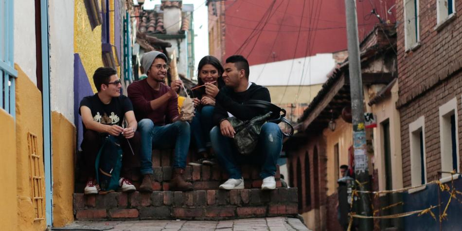
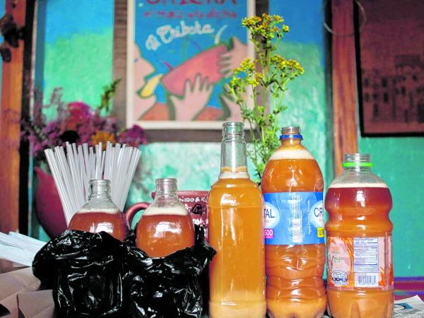
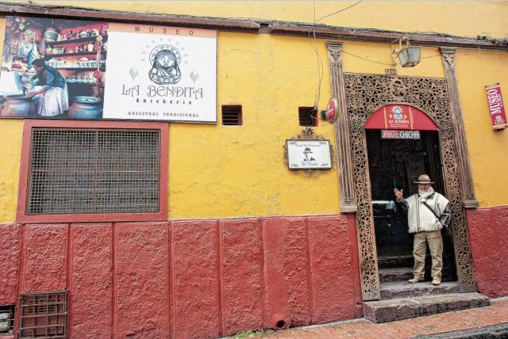

La plaza del chorro de Quevedo ha sido durante años un centro de encuentros para personas de todas las edades, pues es uno de los atractivos urbanos de la ciudad ya que se encuentra en uno de los barrios mas tradicionales de Bogotá.
La llamada calle del embudo es una de las vías por las cuales se puede acceder a la plazoleta, se trata de una calle muy vieja, estrecha y empedrada, que en la actualidad esta destinada unicamente al paso de los peatones. Este es el escenario que algunos de los artistas urbanos ocupan para plasmar su arte en murales o grafitis.

Sobre esta calle hay diferentes establecimientos que en su mayoría ofrecen una experiencia gastronómica como lo son los bares, cafeterias, restaurantes que allí se encuentran en la zona. En estos lugares se puede desde degustar un buen café hasta pasar una tarde acompañado de amigos y con cervezas y musica rock de fondo. pues allí se ubican espacios con todo tipo de ambientaciones para todo tipo de gustos.

La bebida característica y emblemática del Chorro de Quevedo y sus alrededores es la chicha, es un trago de maiz fermentado que existe desde hace más de 9000 años en la región. La ofrecen de sabores y colores diferentes, el precio también varia según el establecimiento, además se puede encontrar en vaso o totuma si se desea vivir la experiencia completa.
Aquí las anecdotas, cuentos e incluso chistes se toman el escenario, son muchos los cuenteros que narran sus historias con monologos preparados en la Plazoleta, las personas se reunen entorno a ellos y al final de cada presentación se recoge entre todo el público un aporte voluntario pues este es la forma de sustento de estas personas.
Son estas y muchas otras actividades como las presentaciones musicales, acrobacias o malabares toman lugar en este espacio, lo que hace a este un punto tan turistico de la ciudad.

Frente a la plaza del chorro de quevedo en la carrera primera con calle 12B bis, se encuentra La Bendita Chicheria, se trata de una tienda que también funciona como museo, en este lugar se encuentra todo tipo de objetos y fotografias que hacen referencia a los aspectos tradicionales de la cultura de Bogotá. Dentro del lugar se lleva a cabo un recorrido que tiene una duración de cuarenta minutos, en el que se habla del origen y la preparación de la chicha.
Su fundador, Alfredo Ortiz tenía como objetivo el recuperar y revivir las costumbres ancestrales, por lo que además del recorrido historico se hace un llamado de atención a nustra cultura olvidada.